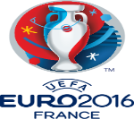
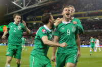

France 10-June-2016 10-july-2016

Click On The Image Above
The 2016 UEFA European Championship, commonly referred to as UEFA Euro 2016, will be the 15th edition of the UEFA European Championship, the quadrennial international men's football championship of Europe organized by UEFA. It is scheduled to be held in France from 10 June to 10 July 2016. Spain are two-time defending champions. For the first time, the European Championship final tournament will be contested by 24 teams, having been expanded from the 16-team format used since 1996. Under this new format, the finalists will contest a group stage consisting of six groups of four teams, followed by a knockout stage including three rounds and the final. 19 teams joined France who qualified automatically as hosts. A two-legged play-off in November 2015 decided the last four spots at the final tournament.
The 2016 UEFA European Championship, commonly referred to as UEFA Euro 2016, will be the 15th edition of the UEFA European Championship, the quadrennial international men's football championship of Europe organized by UEFA. It is scheduled to be held in France from 10 June to 10 July 2016. Spain are two-time defending champions. For the first time, the European Championship final tournament will be contested by 24 teams, having been expanded from the 16-team format used since 1996. Under this new format, the finalists will contest a group stage consisting of six groups of four teams, followed by a knockout stage including three rounds and the final. 19 teams joined France who qualified automatically as hosts. A two-legged play-off in November 2015 decided the last four spots at the final tournament.
Euros 2016
France was chosen as the host on 28 May 2010, after a bidding process in which they beat Italy and Turkey for the right to host the 2016 finals. The matches will be played in ten stadia in ten cities: Bordeaux, Lens, Lille, Lyon, Marseille, Nice, Paris, Saint-Denis, Saint-Étienne, and Toulouse. It will be the third time that France hosts the tournament, after the inaugural tournament in 1960 and the 1984 finals. The French team have won the European Championship twice: in 1984 and 2000.
Euros 2016
The winning team earns the right to compete at the 2017 FIFA Confederations Cup hosted by Russia.